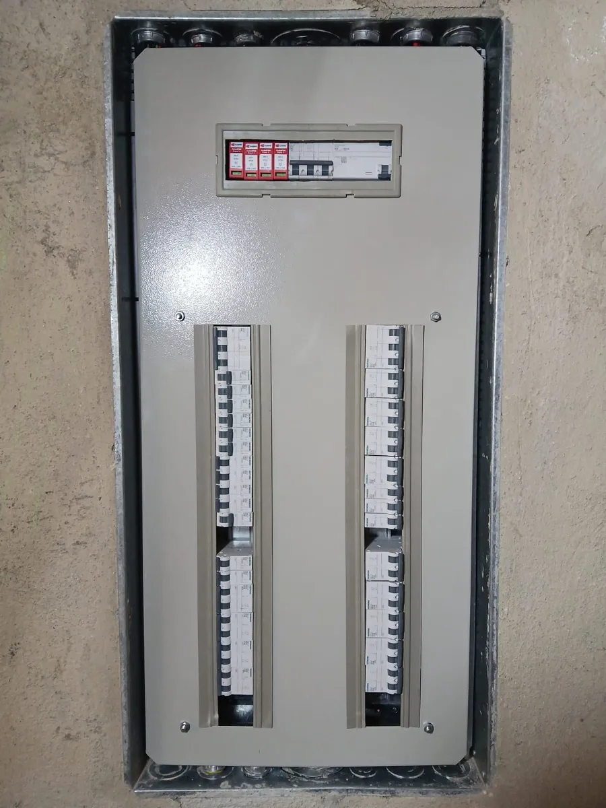

Aterramento é uma daquelas partes da instalação que ninguém vê e quase ninguém pergunta se existe. Uma instalação sem aterramento funciona normalmente no dia a dia, e é justamente por isso que o risco passa despercebido por anos. Ele só fica evidente quando algo dá errado, e aí costuma ser com alguém encostando na geladeira, na máquina de lavar ou no registro do chuveiro.
O que é aterramento elétrico, sem complicar
Aterramento é uma ligação física entre a instalação da casa e o solo. Ela é feita por um condutor de proteção, o fio terra, normalmente verde ou verde e amarelo, que sai de cada tomada, passa pelo quadro de distribuição e termina numa haste de cobre cravada na terra.
Em condições normais, nenhuma corrente passa por esse fio. Ele só trabalha quando há um defeito: se um fio desencapado encosta na carcaça metálica de um aparelho, a corrente encontra no fio terra um caminho muito mais fácil do que o corpo de quem toca nele. É também esse caminho que permite ao DR (dispositivo diferencial residual) perceber a fuga e desligar o circuito na hora. Sem aterramento, a carcaça fica energizada, esperando alguém encostar.
Por que tantas casas no Rio não têm aterramento
A NBR 5410, norma que rege as instalações elétricas de baixa tensão, exige o condutor de proteção nos circuitos. Na prática, durante muito tempo isso não foi cumprido em obras residenciais, e só depois de 2011, com a obrigatoriedade das tomadas de três pinos, o assunto chegou de fato ao consumidor. Em bairros com muitos imóveis antigos, como Copacabana, Tijuca, Ipanema e Botafogo, as situações mais comuns são:
- Instalação original com apenas fase e neutro, sem nenhum fio terra no prédio ou na casa
- Reforma que trocou as tomadas pelo padrão de três pinos, mas não passou o fio terra, deixando o pino do meio ligado a nada
- Terra improvisado ligado no neutro, que parece resolver mas pode energizar a carcaça do aparelho se o neutro tiver qualquer falha
- Haste de aterramento antiga, corroída pela umidade ou pela maresia, ou desconectada do quadro depois de alguma obra

O risco real de uma instalação sem aterramento
O risco mais grave é o choque. Em áreas molhadas, como banheiro, cozinha e área de serviço, uma fuga de corrente na carcaça de um aparelho encontra a pessoa descalça e com a mão úmida, que é o pior cenário possível. Já falamos sobre isso no post sobre o que fazer em caso de choque elétrico em casa. Além dele, a falta de aterramento traz outros problemas:
- O DR continua ajudando, mas só percebe a fuga quando ela já está passando pelo corpo de alguém. Com aterramento, ele desliga antes, no momento em que a carcaça energiza
- O DPS, dispositivo que protege contra surtos de raio e oscilação da rede, depende do aterramento para funcionar. Sem ele, eletrônicos ficam mais expostos
- Manuais de chuveiro, ar-condicionado e máquina de lavar pedem ligação ao fio terra, e a ausência pode pesar numa discussão de garantia
- Aquele formigamento leve ao encostar no notebook carregando ou na porta da geladeira, que muita gente acha normal e não é
Como saber se a sua casa tem aterramento
Alguns indícios ajudam a desconfiar, mesmo sem instrumento:
- No quadro de distribuição, procure um barramento com fios verdes ou verde e amarelo conectados. Se não houver nenhum fio dessa cor, é muito provável que a casa não tenha terra
- Tomadas de dois pinos pela casa toda, ou adaptadores em uso para ligar aparelhos de três pinos
- Com o disjuntor desligado, uma tomada de três pinos aberta mostra se o borne do meio tem fio conectado. Se não tiver segurança para isso, não abra
- Choque leve ou formigamento ao tocar em carcaças metálicas
Encontrar o fio verde não garante que o aterramento funciona. A confirmação vem da medição: o eletricista testa a continuidade do condutor de proteção até cada tomada e mede a resistência da haste com um terrômetro. É comum achar uma haste instalada há anos que, na prática, não aterra quase nada.
Dá para instalar aterramento numa casa que não tem?
Na maioria dos casos, sim. Em casa, o serviço envolve cravar a haste, interligar ao quadro e passar o condutor de proteção até as tomadas, aproveitando os eletrodutos existentes quando há espaço. Em apartamento, depende de o prédio ter aterramento na prumada. Quando não tem, a solução definitiva passa pelo condomínio. Se a fiação também for antiga, vale olhar os sinais de que ela está no fim da vida útil, porque muitas vezes faz sentido resolver as duas coisas juntas.
Quando o orçamento não permite fazer tudo de uma vez, a prioridade costuma ser os circuitos de chuveiro, cozinha, área de serviço e ar-condicionado, sempre com DR.
Quando chamar um eletricista
Se o imóvel tem mais de 20 anos sem revisão, se alguém já levou choque em algum aparelho ou se as tomadas de três pinos foram trocadas sem passar fio novo, vale uma avaliação. A MCD verifica se existe aterramento, mede a haste, confere o funcionamento do DR e indica o que precisa ser feito na instalação elétrica, com orçamento claro antes de qualquer execução.